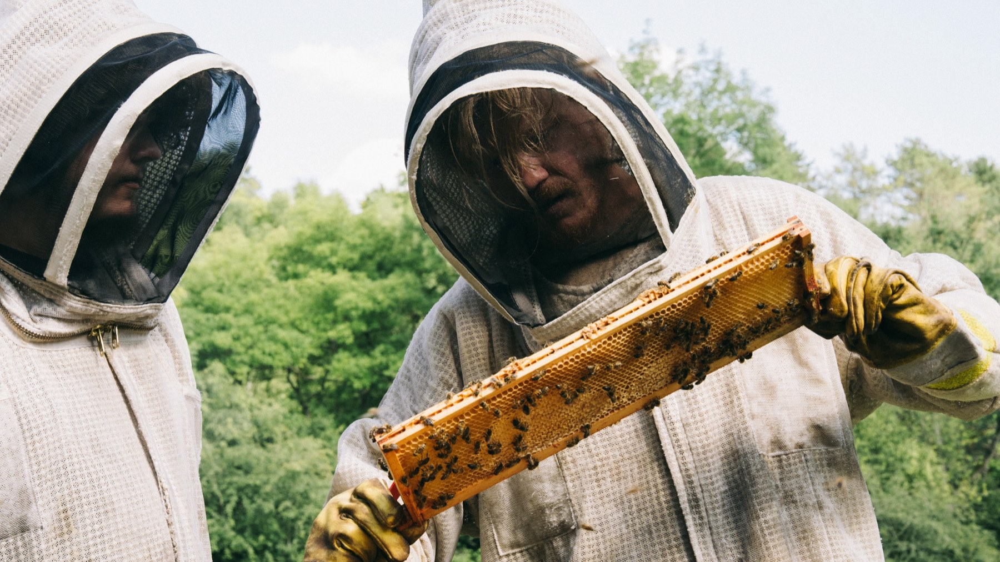
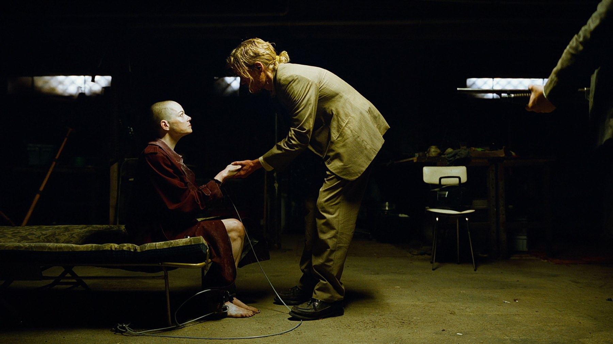

Bugonia
Due complottisti rapiscono una manager convinti che sia un'aliena: Lanthimos rifà un cult coreano e firma una satira nera, crudele e spassosa sul nostro presente
Yorgos Lanthimos ed Emma Stone sono ormai una delle coppie più prolifiche e imprevedibili del cinema d'autore. Dopo La favorita, Povere creature! e Kinds of Kindness, il regista greco e l'attrice tornano insieme con Bugonia, presentato in concorso alla Mostra di Venezia 2025 e arrivato nelle sale italiane il 23 ottobre. È un film più asciutto e diretto dei precedenti, e forse proprio per questo uno dei più efficaci.
Di cosa parla Bugonia?
Teddy, interpretato da Jesse Plemons, è un apicoltore che lavora nel magazzino di una grande azienda farmaceutica e si è convinto, a forza di video e teorie online, che la sua amministratrice delegata, Michelle Fuller, sia un'aliena arrivata da Andromeda per distruggere la Terra. Insieme al cugino Don, interpretato da Aidan Delbis, decide di rapirla e tenerla prigioniera nel seminterrato di casa, per costringerla a confessare.
Il punto di partenza è un cult sudcoreano del 2003, Save the Green Planet! di Jang Joon-hwan, adattato da Will Tracy, sceneggiatore di The Menu e della serie Succession. Nel cast anche Stavros Halkias e Alicia Silverstone.

Emma Stone e Jesse Plemons, un duello
Il film è quasi un dramma da camera: due persone, una stanza, e un confronto che cambia di continuo i rapporti di forza. Emma Stone, con la testa rasata, è gelida, ironica e sfuggente, e non lascia mai capire fino in fondo chi sia davvero la sua Michelle. Jesse Plemons dà a Teddy una sincerità che fa paura: non è un mostro, è un uomo che ha trovato nelle teorie del complotto una risposta al dolore, e il film non lo deride mai del tutto.
È proprio questo equilibrio a rendere Bugonia così attuale. Lanthimos racconta la paranoia, la sfiducia verso le grandi aziende e il disastro ambientale senza schierarsi in modo facile, lasciando lo spettatore a chiedersi da che parte stare, almeno fino al finale.
Come è nato il film
Il progetto è costato tra i 45 e i 55 milioni di dollari, la cifra più alta mai spesa da Lanthimos. Le riprese sono cominciate il 1° luglio 2024 in Inghilterra, a Oxshott e High Wycombe, per chiudersi in autunno ad Atlanta, con qualche giorno di riprese aggiuntive a Milos, in Grecia, a maggio 2025. Jang Joon-hwan, autore dell'originale, avrebbe dovuto dirigere lui stesso il rifacimento ma ha rinunciato per motivi di salute: è rimasto come produttore esecutivo, mentre tra i produttori compaiono Ari Aster e la stessa Emma Stone.
Nella sceneggiatura di Will Tracy il protagonista dell'originale, un uomo, diventa una donna: Michelle Fuller, amministratrice delegata di un'azienda farmaceutica. Anche la musica ha una storia curiosa: Jerskin Fendrix, alla sua terza collaborazione con Lanthimos, ha composto la colonna sonora partendo da tre parole (api, seminterrato, astronave) senza aver visto né sceneggiatura né immagini.
Com'è girato
Il direttore della fotografia Robbie Ryan ha girato circa il 95% del film in VistaVision su pellicola 35 mm, più di qualunque film dai tempi di One-Eyed Jacks di Marlon Brando nel 1961. Il risultato è un'immagine nitidissima e quasi clinica, perfetta per una storia che alterna uffici asettici, campagne americane e seminterrati claustrofobici. La durata contenuta, 118 minuti, aiuta il ritmo.

Nei mesi seguenti il film ha raccolto riconoscimenti anche fuori dai grandi premi: Emma Stone, che del film è pure produttrice, è stata premiata come miglior attrice dal Dublin Film Critics' Circle e al Capri Hollywood International Film Festival, mentre Will Tracy ha ricevuto il premio per la sceneggiatura al Montclair Film Festival. Un premio agli European Film Awards è andato al trucco e alle acconciature di Torsten Witte.
A chi lo consigliamo? A chi ha amato il lato più feroce di Lanthimos e non cerca consolazione, ma anche a chi, dopo La favorita e Povere creature!, voleva vederlo alle prese con una storia più lineare e con pochi personaggi. Chi invece cerca una commedia leggera sul complottismo resterà spiazzato: qui si ride, ma quasi sempre a denti stretti, e la risata lascia presto il posto a un certo disagio.
Cosa non funziona
Chi non ama il cinema di Lanthimos difficilmente cambierà idea: il tono resta freddo, alcuni momenti di violenza sono volutamente sgradevoli e il finale, che non anticipiamo, ha diviso la critica tra chi lo considera geniale e chi lo trova troppo beffardo. La parte centrale, inoltre, gira un po' su se stessa prima dell'ultimo atto.
Accoglienza e dove vederlo
Presentato a Venezia il 28 agosto 2025, il film è stato accolto bene: 87% di recensioni positive su Rotten Tomatoes e 72 su Metacritic. Il consenso è quasi unanime sulle interpretazioni di Stone e Plemons; i dubbi riguardano il tono, giudicato da una parte della critica americana troppo cupo e programmatico nel suo disprezzo per l'umanità. Al botteghino mondiale ha incassato circa 43,8 milioni di dollari.
Nei mesi successivi all'uscita sono arrivate, a gennaio 2026, le quattro candidature agli Oscar (miglior film, miglior attrice per Emma Stone, sceneggiatura non originale per Will Tracy e colonna sonora per Jerskin Fendrix) e tre ai Golden Globe. A ottobre 2026, in Italia, è disponibile in abbonamento su Sky e NOW e a noleggio su Apple TV, Rakuten TV e CHILI.
Se da un lato il tono gelido e il finale beffardo non piaceranno a tutti, dall'altro Lanthimos firma una satira nera precisa e attualissima, con due interpreti in stato di grazia e un'immagine splendida. Uno dei suoi film più compatti e riusciti.
Domande frequenti
Di cosa parla Bugonia?
Due cugini ossessionati dalle teorie del complotto rapiscono Michelle Fuller, potente amministratrice delegata di un'azienda farmaceutica interpretata da Emma Stone, convinti che sia un'aliena venuta a distruggere la Terra.
Bugonia è un remake?
Sì, è il rifacimento in lingua inglese del film sudcoreano Save the Green Planet! di Jang Joon-hwan, uscito nel 2003.
Dove vedere Bugonia in streaming?
In Italia è disponibile in abbonamento su Sky e NOW e a noleggio su Apple TV, Rakuten TV e CHILI.